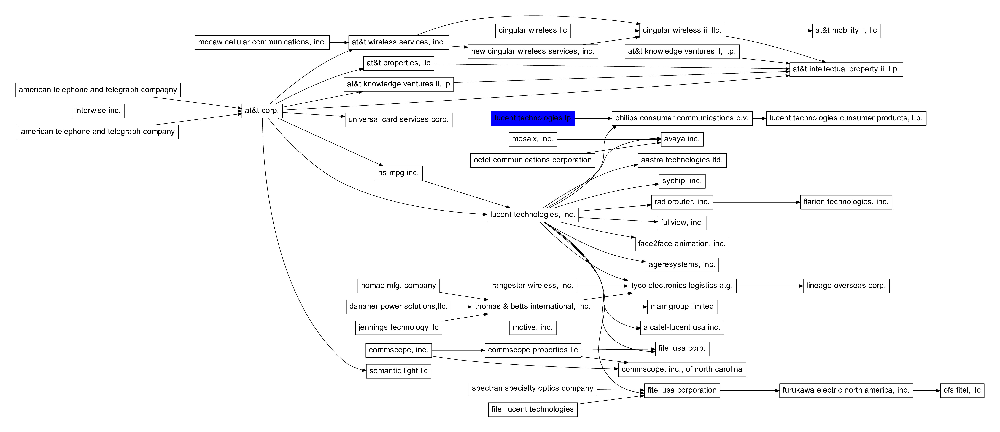
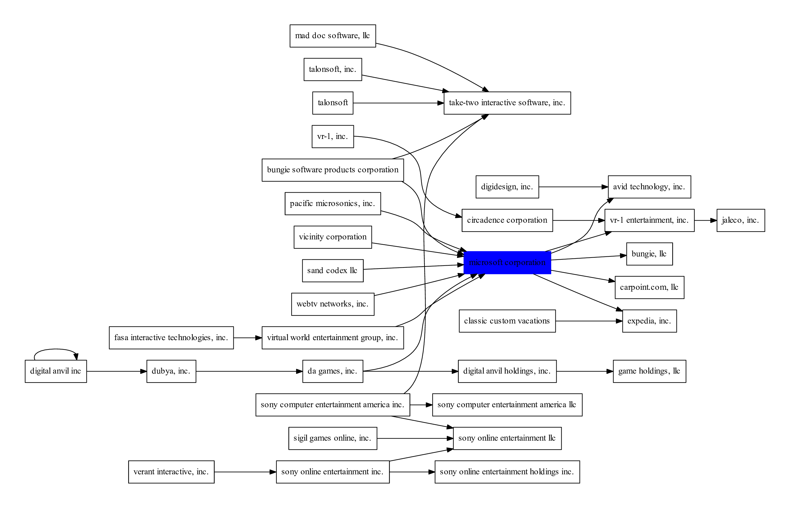

Mining Corporate History with the US Trademark dataset
Dataset
Trademark Case Files Dataset from the United States Patent and Trademark Office (1.79GB)
Technologies & Algorithms
Java, MySQL, graphviz, data mining, dynamic programming, Steiner tree, RDF
Project Description
The project aims to extract the corporate history of all US companies based on the USPTO trademark dataset.
If some change in ownership occurs the corresponding trademarks have to be
re-registered accordingly. For instance, in the domain of
corporate mergers, acquisitions and spin-offs, one can observe how the intellectual property is
allocated among its owners throughout time. The United States Patent and Trademark Office
provides a set of trademarks along with the lists of their owners. By using the
reallocation of trademark I wrote a data mining algorithm which extracts 16K
unique companies, 200K attributes along its evolution history. The evolution
graphs are visualized with the GraphViz library.
Results
A number of extracted corporate histories are shown below (clickable).
AT&T Corp:

Microsoft:

Code & Publications
https://github.com/bykau/steiner-forest
Bykau, S., Rizzolo, F., & Velegrakis, Y. A Query Answering System for Data with Evolution Relationships. SIGMOD 2013
Bykau, S., Mylopoulos, J., Rizzolo, F., & Velegrakis, Y. On Modeling and Querying Concept Evolution. Journal on Data Semantics 2012
Bykau, S., Mylopoulos, J., Rizzolo, F., & Velegrakis, Y. Supporting Queries Spanning Across Phases of Evolving Artifacts using Steiner Forests. CIKM 2011
Katifori, A., Nikolaou, C., Platakis, M., Ioannidis, Y., Tympas, A., Koubarakis, M., Sarris, N., et al. The Papyrus digital library: discovering history in the news. TPDL 2011
Bykau S., Kiyavitskaya N., Tsinaraki C., Velegrakis Y. Bridging the gap between heterogeneous and semantically diverse content of different disciplines. In FlexDBIST. 2010